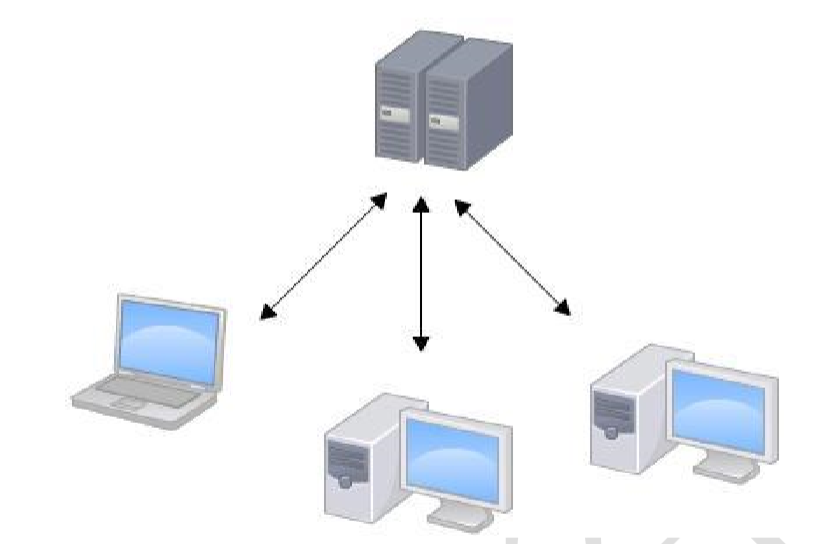

版本控制具应该具备的功能
- 协同修改
- 多人并行不悖的修改服务器端的同一个文件。
- 数据备份
- 不仅保存目录和文件的当前状态，还能够保存每一个提交过的历史状态。
- 版本管理
- 在保存每一个版本的文件信息的时候要做到不保存重复数据，以节约存储空 间，提高运行效率。这方面 SVN 采用的是增量式管理的方式，而 Git 采取了文件系统快照的方式。
- 权限控制
- 对团队中参与开发的人员进行权限控制。
- 对团队外开发者贡献的代码进行审核——Git 独有。
- 分支管理
- 允许开发团队在工作过程中多条生产线同时推进任务，进一步提高效率。
版本控制简介
版本控制
工程设计领域中使用版本控制管理工程蓝图的设计过程。在 IT 开发过程中也可以 使用版本控制思想管理代码的版本迭代。
版本控制工具
- 集中式版本控制工具：CVS、SVN、VSS……
 - 分布式版本控制工具： Git、Mercurial、Bazaar、Darcs……

Git 简介
Git简介

Git官网和 Logo
官网地址：https://git-scm.com/

Git的优势
- 大部分操作在本地完成，不需要联网
- 完整性保证
- 尽可能添加数据而不是删除或修改数据
- 分支操作非常快捷流畅
- 与 Linux 命令全面兼容
Git 结构

Git和代码托管中心
代码托管中心的任务：维护远程库
- 局域网环境下
- GitLab 服务器
- 外网环境下
- GitHub
- 码云
本地库与远程库
-
团队内部协作

-
跨团队协作